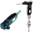
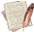

- displays all record files stored in the currently opened database and lets you select one or more for viewing in a graphic form. Refer to Select record file dialog for more information.
- displays all record files stored in the currently opened database and lets you select one or more for viewing in a graphic form. Refer to Select record file dialog for more information.
 - customizes the text that appears on the graph including title, axis names and legends.
- customizes the text that appears on the graph including title, axis names and legends.
- views the Statistics report.
 - specifies the period over which measurement values are shown on the graph. For more information, see Selecting time period.
- specifies the period over which measurement values are shown on the graph. For more information, see Selecting time period.

- selects the channels that will appear on the graph. See Select channel dialog for details.
 - brings out a red leakage line on the graph to define the leakage point. Selecting this item again will hide the leakage line.
- brings out a red leakage line on the graph to define the leakage point. Selecting this item again will hide the leakage line.
 - specifies the settings for calculating the cost of leakage. For more details, see Calculation setting dialog.
- specifies the settings for calculating the cost of leakage. For more details, see Calculation setting dialog.

- adds a comment to the graph. For more information, see Adding comments to graph.
- enters the basic information about your company. For more information, see Entering basic information.
 - previews and prints the report. For more information, see Previewing and Printing report.
- previews and prints the report. For more information, see Previewing and Printing report.